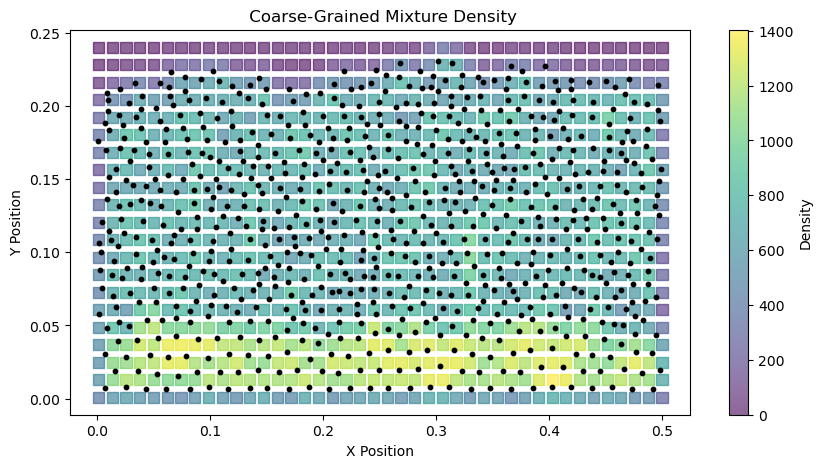
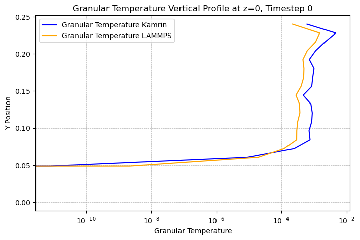
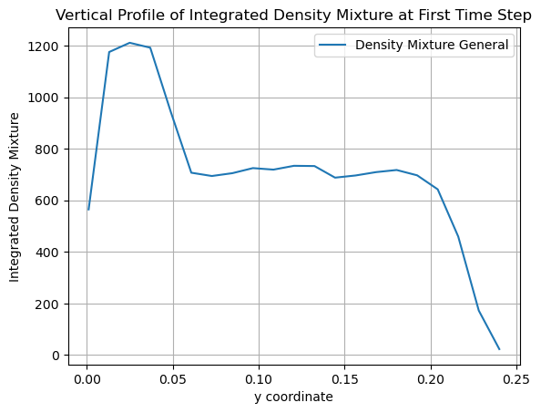
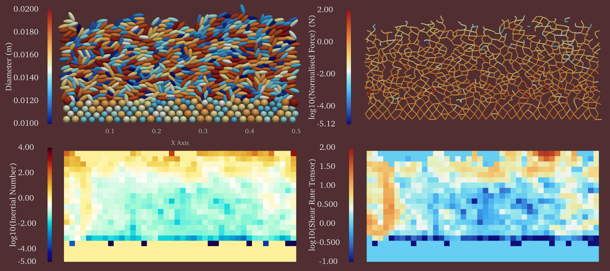

Bedload Transport Example: 2-dimensional Coarse Graining
In this example, we demonstrate how to use the CoarseGraining to perform coarse graining on a 2D bedload transport simulation and plot the results. In order to do that, you can use the compute_CG.ipynb Jupyter notebook provided in the examples/bedload_transport directory.
The files required for this example can be found in the examples/bedload_transport directory of the repository:
The DEM simualtion data files in the examples/bedload_transport/VTU directory
The configuration file config.ini in the examples/bedload_transport directory
Completing the Configuration File
Before running the coarse graining, ensure that the config.ini file is properly set up.
The configuration file contains various sections, marked by headers in square brackets.
The paths section specifies the input and output file paths.
[paths]
particles_path = ./VTU/DES_FB1_
contacts_path = ./VTU/ENTIRE_DOMAIN_
output_path = ./PysammosCG/
The timesteps section defines the time range and interval for the coarse graining process. t0 is the starting timestep, tf is the ending timestep, and dt is the timestep interval.
[timesteps]
t0 = 150
tf = 152
dt = 1
The smoothing_function section defines the type of smoothing function to be used for coarse graining. In this case, we are using the Lucy function. Find the corresponding documentation in the following page: Kernels module.
[smoothing_function]
type = Lucy
The flags section defines the partialignore flag, which indicates whether to ignore particle phases during the coarse graining process. It will force the number phases to be one if it is set to True.
[flags]
partialignore = True
The key_mapping section maps the DEM simulation data fields to the expected keys used in the coarse graining process.
[key_mapping]
Global_ID = Particle_ID
Particle_Velocity = Velocity
Particle_Diameter = Diameter
Particle_Density = Density
Particle_Volume = Volume
Particle_Mass = Mass
Particle_Radius = None
Coordination_Number = None
Particle_i_ID = Particle_ID_1
Particle_j_ID = Particle_ID_2
Force_ij = FORCE_CHAIN_FC
Contact_ij = FORCE_CHAIN_CONTACT_POINT
- The grid_info section specifies the grid parameters for the coarse graining process, including the grid dimensions, axes, and boundaries.
The grid_dimension is set to '2' for a 2D simulation.
The grid_axes are set to 'xy', indicating that the coarse graining will be performed in the x and y directions.
The automatic_grid is set to False, allowing for manual specification of grid boundaries.
The x_min, x_max, y_min, and y_max parameters define the spatial extent of the grid.
The z_transect is set to '0.0', indicating that the coarse graining will be performed at this z-level.
The x_axis_periodic is set to 'True', indicating that the x-axis is periodic, while the y and z axes are non-periodic.
Find the corresponding documentation in the following page: Grid Generation.
[grid_info]
grid_dimension = 2
grid_axes = xy
automatic_grid = False
x_min = 0.00105
x_max = 0.5
y_min = 0.001
y_max = 0.24
z_min = None
z_max = None
x_transect = None
y_transect = None
z_transect = 0.0
x_axis_periodic = True
y_axis_periodic = False
z_axis_periodic = False
The fields_to_export section specifies which coarse-grained fields to export.
[fields_to_export]
volume_fraction = True
density_particle = False
density_mixture = True
momentum_density = False
velocity = True
velocity_gradient = True
kinetic_tensor = False
contact_tensor = False
total_stress_tensor = True
pressure = True
granular_temperature = True
granular_temperature_slices = True
fabric_tensor = True
inertial_number = True
coordination_number = False
d43 = False
d32 = False
frictional_coefficient = True
shear_rate_tensor = False
The output_options section defines the output formats for the coarse-grained data, including vkthdf and h5 formats.
[output_options]
vkthdf_output = True
h5_output = False
Coarse Graining Steps
First, ensure you have the necessary libraries installed:
import numpy as np
from pysammos.utils.config_loader import load_config
from pysammos.coarse_graining import CoarseGraining
We should initialize the configuration and the coarse graining object:
# Load the configuration from the ini file
cfg = load_config("config.ini")
# Initialize the CoarseGraining class with the loaded configuration
CG = CoarseGraining(
particle_path=cfg["particles_path"],
contacts_path=cfg["contacts_path"],
output_path=cfg["output_path"],
start_timestep=cfg["t0"],
end_timestep=cfg["tf"],
dt_time_step=cfg["dt"],
DEM_keymap=cfg["key_mapping"],
grid_info=cfg["grid_info"],
weight_function=cfg["smoothing_function"],
fields_to_export=cfg["fields_to_export"],
ignore_phases=cfg["partialignore"]
)
Next, we can perform the coarse graining on the simulation data:
Load the size-relevant particle data for the first time step
Bounds_t0, Diameter_t0, Density_t0, Mass_t0, GlobalID_t0 = CG.data_sampling()
Calculate the particle size range
CG.get_particle_size_statistics(Diameter_t0, Mass_t0)
print(">> Particle size statistics: ")
print(" d43: ", CG.d43)
print(" dmax: ", CG.dmax)
print(" d50: ", CG.d50)
print(" d32: ", CG.d32)
print(" drms: ", CG.drms)
Get the phases
CG.get_particle_phases(Diameter_t0, Density_t0, GlobalID_t0, 8)
print(">> Phases: ")
print(" Diameters: ", CG.phases[:,0])
print(" Densities: ", CG.phases[:,1])
Calculate the CG grid spacing
CG.set_resolution(CG.d43) # here you can input different number, to make w and c bigger or smaller
print(">> Coarse Graining resolution: ")
print(" c:", CG.c)
print(" w:", CG.w)
Generate the CG grid
CG.generate_grid()
print(">> Grid: ")
print(" Grid Points: ", CG.GridPoints.shape, "First Point: ", CG.GridPoints[0])
print(" Nodes: ", CG.Nodes)
print(" Spacing: ", CG.Spacing)
Calculate the CG fields
CG.fields_in_time()
Alternatively, you can compute all the above steps in one go using the run method:
CG.run()
Plotting the Results in Python
After running the above code, the coarse-grained fields will be saved in the specified output directory. To visualize the results from the .h5 files, you can use the provided Jupyter notebook visualization_bedload_transport.ipynb in the same directory.
Import necessary libraries
from pysammos.data_write.h5.writer import H5XarrayManager
import matplotlib.pyplot as plt
import numpy as np
from scipy.interpolate import griddata
import pyvista as pv
from matplotlib.lines import Line2D
Initialize the H5XarrayManager to read the coarse-grained data
# gridded data
manager = H5XarrayManager("./PysammosCG/CG_Lucy_Monodisperse.h5")
bedload_CG = manager.h5_to_xarray()
# sliced granular temperature data
manager_gt = H5XarrayManager("./PysammosCG/CG_GranularTemperature_slices.h5")
slices_gt = manager_gt.h5_to_xarray()
Plotting the mixture density field at a specific time step
# Create figure and axis
fig = plt.figure(figsize=(10,5))
ax = fig.add_subplot(111)
# Plot DEM particle positions
bedload_DEM = pv.read('./VTU/DES_FB1_0150.vtp')
bedload_particles = bedload_DEM.points
x_particle = bedload_particles[:, 0]; y_particle = bedload_particles[:, 1]
ax.scatter(x_particle, y_particle, s=10, c='k', alpha=1, label='Particle Positions', zorder=3)
# Plot the CG data
x = np.asarray(bedload_CG.positions[:, 0])
y = np.asarray(bedload_CG.positions[:, 1])
z = np.asarray(bedload_CG.positions[:, 2])
var = np.asarray(bedload_CG.density_mixture.values[0, :])
sc = ax.scatter(x, y, s=65, c=var,
cmap='viridis', alpha=0.6, label='CG Density',
zorder=1, marker='s')
# Add colorbar and labels
plt.colorbar(sc, ax=ax, label='Density')
ax.set_xlabel('X Position')
ax.set_ylabel('Y Position')
ax.set_title(' Coarse-Grained Mixture Density')
plt.show()
{kind=link}

Plotting the granular temperature field at a specific time step
Pysammos provides the granular temperature slices along specified transects using other methods. See the documentation for more details: Sliced.
# plot first time step vertical profile comparing Kamrin and LAMMPS
fig, ax = plt.subplots(figsize=(8,5))
ax.plot(slices_gt.granular_temperature_Kamrin[0,:,0], slices_gt.positions[:, 1], label='Granular Temperature Kamrin', color='blue')
ax.plot(slices_gt.granular_temperature_LAMMPS[0,:,0], slices_gt.positions[:, 1], label='Granular Temperature LAMMPS', color='orange')
ax.set_xlabel('Granular Temperature')
ax.set_ylabel('Y Position')
ax.set_title('Granular Temperature Vertical Profile at z=0, Timestep 0')
#gridlines
ax.grid(visible=True, which='both', linestyle='--', linewidth=0.5)
# log scale x axis
ax.set_xscale('log')
ax.legend()
plt.show()
{kind=link}

Plotting the vertical profiles
The vertical profiles of the coarse-grained fields can be plotted using the following code, which uses the subpackage Post Averaging.
from pysammos.data_write.h5.writer import H5XarrayManager
from pysammos.post_averaging.profiles import VerticalIntegrator
import matplotlib.pyplot as plt
Use the H5XarrayManager class to load the coarse-grained data.
# Load data with H5XarrayManager
manager = H5XarrayManager("./PysammosCG/CG_Lucy_Monodisperse.h5")
bedload_CG = manager.h5_to_xarray()
Perform vertical integration using the VerticalIntegrator class.
# initialize the VerticalIntegrator
VI = VerticalIntegrator(bedload_CG, 'y')
# perform integration
vertical_ds_general = VI.integration()
Plot the profile of density_mixture of the first time step
# get the data and plot
vertical_ds_general['density_mixture'].isel(time=0).plot.line(x='y', label='Density Mixture General')
plt.xlabel('y coordinate') ; plt.ylabel('Integrated Density Mixture')
plt.title('Vertical Profile of Integrated Density Mixture at First Time Step')
plt.legend()
plt.grid()
plt.show()
{kind=link}

Visualising the vtkhdf Files in Paraview
You can also visualise the output vtkhdf files in Paraview.
Open Paraview and go to File -> Open. Select the desired vtkhdf file from the output directory (e.g., CG_Lucy_Monodisperse_0150.vtkhdf).
Click Apply in the Properties panel to load the data.
Use the Coloring dropdown menu in the toolbar to select the field you want to visualize (e.g., density_mixture).
{kind=link}
